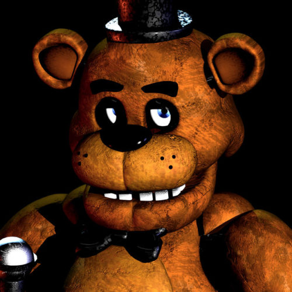
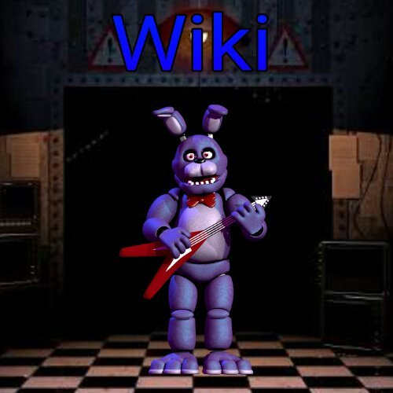
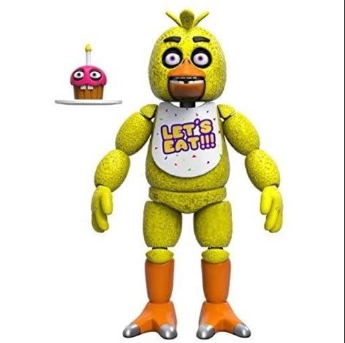
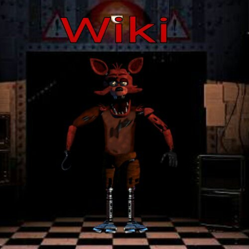

Freddy Fazbear é o principal antagonista de Five Nights at Freddy's. Ele é um urso animatrônico que é deixado no "modo livre" durante a noite, fazendo ele passear pela Pizzaria Freddy Fazbear juntamente com os outros animatrônicos até as 6:00 da manhã. Aparência: Freddy é um urso animatrônico marrom com leve tom de marrom em sua barriga e seu focinho é preto e inchado. No palco, ele veste um chapéu alto e preto e uma gravata borboleta enquanto segura um microfone na mão direita. Ele tem sobrancelhas pretas e grossas, pés de três dedos e três sardas enegrecidas em ambos os lados de seu focinho. Em sua cabeça tem o que parece ser marcas de mãos. Suas orelhas redondas são articuladas e são, portanto, capazes de se mover para trás e para frente. Freddy tem dentes de um animal herbívoro em sua mandíbula, e como a maioria dos animatrônicos na pizzaria (exceto Foxy), não tem dentes visíveis em sua mandíbula superior.
O Melhor Conteúdo FNAF!
Freddy
Bonnie
Bonnie (originalmente Bonnie the Bunny) é um dos quatro antagonistas em Five Nights at Freddy's. Assim como Freddy e Chica, Bonnie alegra as crianças durante o dia na Pizzaria Freddy Fazbear. Contudo, durante a noite, ele faz o que os outros animatrônicos fazem: agarra um humano e tenta colocá-lo em um traje de Freddy Fazbear, matando-o. Aparência: Bonnie é um animatrônico coelho de olhos marrons que possui orelhas articuladas que podem dobrar para frente, e usa uma gravata borboleta vermelha. No Palco, ele segura uma guitarra vermelha. Excluindo a cabeça e a cor, o corpo de Bonnie é semelhante ao de Freddy. Esta versão de Bonnie, assim como todas as versões dos animatrônicos do primeiro jogo, parece não ter dentes em sua mandíbula superior.
Chica
Chica (originalmente Chica the Chicken) é uma dos quatro principais antagonistas do jogo Five Nights at Freddy's. Ela é um robô que alegra as crianças durante o dia na Pizzaria Freddy Fazbear, junto com Freddy Fazbear e Bonnie.Ela é a segunda voz da banda. Durante a noite, igual aos outros animatrônicos, ela irá tentar colocar qualquer humano ou endoesqueleto em um traje de animatrônico. Aparência: Chica é uma animatrônica amarela brilhante de cabeça esférica, bico laranja, olhos de cor magenta e sobrancelhas pretas. Ela usa um babador escrito "LET'S EAT!!!" ("VAMOS COMER!!!" em português) em letras amarelas contornadas de roxo. O babador é salpicado de triângulos tricolores em padrões de três, e que parecem ser pequenas fatias de pizza estilizados. No Palco, ela carrega um cupcake rosa com grandes olhos.Assim como os outros animatrônicos, ela não tem dentição na parte superior de sua mandíbula e possui dentes na parte inferior. Os dentes de seu endoesqueleto podem ser vistos na parte de trás de sua boca, embora eles apenas sejam claramente visíveis em certas câmeras e ângulos.
Foxy
Foxy (originalmente Foxy the Pirate Fox) é um antagonista de Five Nights at Freddy's. Sua localização inicial é atrás da cortina da Enseada do Pirata, de onde ele emerge e corre até o Escritório para atacar o jogador em qualquer noite, isso se ele não for monitorado o suficiente (com exceção da primeira noite), ou for monitorado demais (a partir da segunda noite) pelo jogador. Ao contrário dos outros animatrônicos do jogo, Foxy vai se esconder por um bom tempo antes de atacar o jogador. Não se sabe o motivo de Foxy ser o único animatrônico a se esconder, no entanto, é possível que o desenvolvedor do jogo, Scott Cawthon, simplesmente queria um animatrônico que não é visto ou mencionado até mais tarde durante o jogo. Aparência: Como seu nome sugere, Foxy é uma grande raposa animatrônica de cor marrom-avermelhado e pele esfarrapada. Ele tem um gancho em sua mão direita e um tapa-olho em seu olho direito. O tapa-olho é geralmente visto acima de seu olho, ao invés de tampá-lo. Foxy veste calças de linho marrom que são especialmente desfiadas nas pernas. Ele está danificado, com partes de seu maquinário a mostra. Com exceção da coxa, toda a perna é de metal, e sua mão esquerda é completamente descoberta, expondo o seu endoesqueleto. Seu peito, suas coxas e seus braços são rasgados em alguns lugares. Foxy parece ter a mandíbula quebrada, fazendo com que sua boca não feche corretamente e suas pálpebras são levemente caídas. Como todos os outros personagens, Foxy tem um conjunto de dentes. Os dentes de Foxy, no entanto, são mais nítidos do que os dentes dos demais animatrônicos, sendo semelhantes ao de um canino real, enquanto os outros animatrônicos têm dentições de um animal herbívoro. É notável também que, de acordo com o tema pirata, Foxy tem alguns dentes de ouro e outros em falta, mas não se sabe se os dentes em falta fazem parte do tema ou se é a falta de reparos. O seu focinho é salpicado nas laterais com pontos pretos, indicando que ali havia um bigode. É possível que este tenha caído devido a sua degradação.